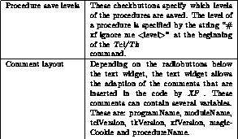
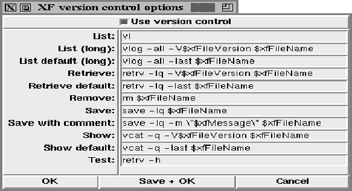

This dialog box provides access to the window handling in XF . It is possible to control the appearance of the main window, and the positioning/sizing of the XF dialog boxes.

Figure: The procedure XFProcOptionsWindow
The single options have the following meanings (some option names may be abbreviated):
Option name & Purpose
